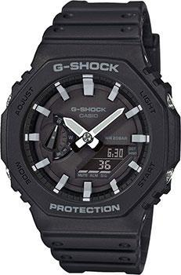

-
Spinnaker HULL
Мужской кварцевый хронограф. Калибр механизма TMI VK73. Центральные часовая и минутная стрелки, секундная стрелка вынесена на малый циферблат. Большая дата в позиции 12 часов. 12/24х часовой формат времени. Секундомер. Тахиметр. Черный циферблат. Корпус выполнен из нержавеющей стали.
Купить -

Casio G-Shock
Стильные компактные джишоки с тонким корпусом и восьмиугольным безелем. Новейшая защитная конструкция Carbon Core Guard позволяет улучшить ударопрочные свойства корпуса и уменьшить габариты часов. Мужские кварцевые часы. Ударопрочный корпус с карбоновыми волокнами защищает от ударов и вибрации.
Купить -
Orient Mako Kamasu
Механические часы с автоподзаводом. Запас хода на 40 часов. Водостойкость WR 200. Центральные часовая, минутная и секундная стрелки. Индикация даты и дня недели. Стрелки и метки с люминесцентным покрытием. Синий циферблат с часовыми индексами в виде штрихов и точек. Корпус выполнен из нержавеющей стали. Диаметр корпуса 42 мм, толщина 13 мм.
Купить -
Seiko Presage
Мужские механические часы с автоподзаводом (с возможностью ручного подзавода). Калибр механизма 4R35. Запас хода 41 час. Функция стоп секунды. Центральные часовая, минутная и секундная стрелки. Апертура даты в позиции 3 часов. Золотистый циферблат.
Купить -
Raymond Weil Freelancer
Механические часы с автоподзаводом. Открытый баланс хода. Запас хода на 38 часов. Водостойкость WR 100. Центральные часовая и минутная стрелки. Стрелки и метки с люминесцентным покрытием. Зеленый циферблат с часовыми индексами в виде штрихов.
Купить -
Swiss military Automatic Dive
Мужские механические часы с автоподзаводом. Калибр механизма Ronda R150 / Sellita SW200. Центральные часовая, минутная и секундная стрелки. Апертура даты в позиции 3 часов. Зеленый циферблат.Круглый корпус выполнен из нержавеющей стали с частичным PVD.
Купить -
Epos Passion Limited Edition
Лимитированная серия 999 экземпляров. Механические часы с ручным заводом. Корпус выполнен из нержавеющей стали. Темно-серый циферблат. Секундная стрелка вынесена на отдельный малый циферблат. Черный кожаный ремешок. Полускелетон. Корпус с прозрачной задней крышкой.
Купить -

Casio Edifice
Стильные и функциональные часы со спортивным дизайном, вдохновленным автомобильной тематикой. Кварцевый хронограф. Водозащита WR 100. Часы, минуты, секунды, дата, 12/24х часовой формат времени, секундомер, хронограф . Люминесцентные стрелки и метки.
Купить -
Epos Passion Limited Edition
Лимитированная серия 999 экземпляров. Механические часы с ручным заводом. Корпус выполнен из нержавеющей стали. Темно-серый циферблат. Секундная стрелка вынесена на отдельный малый циферблат. Черный кожаный ремешок. Полускелетон. Корпус с прозрачной задней крышкой.
Купить